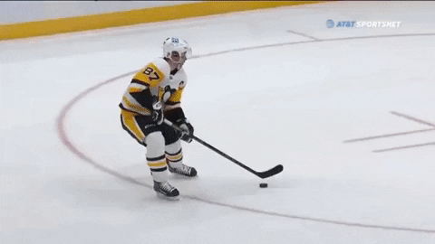

Nogomet
Nogomet je sport u kojemu se dvije momčadi od 11 igrača nadmeću na pravokutnom igralištu travnate površine. Cilj igre jest postizanje više pogodaka od protivničke momčadi bilo kojim dijelom tijela osim rukom. Vratar je jedini igrač kojemu je dozvoljeno igrati i braniti gol rukama, doduše samo unutar jasno označenog pravokutnika ispred vlastitih vrata. Svim igračima dopušteno je proizvoljno kretanje po terenu, iako pravilo zaleđa ograničava napadačke kretnje ovisno o položaju lopte i protivničke obrane.

Nogometna utakmica dvoboj je dvaju momčadi od 11 igrača (10 u polju + vratar) pod nadzorom glavnoga suca i njegovih pomoćnika na propisno označenom igralištu zadovoljavajućih dimenzija. Utakmica traje 90 minuta, a igrači odlaze na petnaestominutni odmor nakon prvih 45 minuta. Trener momčadi organizira svoje igrače u željenu formaciju, ovisno o strategiji koju smatra prikladnom za svaki pojedini dvoboj. Međutim, desetorica igrača „u polju” imaju potpunu slobodu kretanja u svim smjerovima. Iako bi se isto moglo reći i za vratara, njegova uloga jedina je određena pravilima igre. Dok je lopta unutar granica igrališta, vratar ju jedini smije dirati rukama u vlastitom kaznenom prostoru, što znači da će vrlo rijetko izlaziti u dio terena gdje tu pogodnost ne smije koristiti. Igranje rukom svim ostalim igračima zabranjeno je osim kad loptu treba vratiti u igru nakon što sa strane izađe u aut.
Hokej na ledu
Hokej na ledu jedan je od najdinamičnijih zimskih sportova. Hokej je timski sport koji se igra na umjetnim ili prirodnim ledenim površinama, a najpopularniji je u zemljama s dugim, hladnim zimama. Iznimno je popularan u Češkoj, Finskoj, Kanadi, Rusiji, Slovačkoj, Švedskoj i Sjedinjenim Američkim Državama. Krovna organizacija hokeja na ledu IIHF (International Ice Hockey Federation) ima 64 članice, a lige spomenutih zemalja smatraju se najjačima. Na Zimskim je Olimpijskim igrama hokej prisutan od 1924. godine. Najjača je profesionalna liga sjevernoamerička NHL (eng. National Hockey League, ili Nacionalna hokejaška liga) u kojoj se natječe 30 klubova, od čega 23 iz SAD-a, te 7 kanadskih.
Više informacija Hokej na ledu igra se na igralištu propisanih dimenzija, a igraju dvije momčadi s pet igrača i jednim vratarom na klizaljkama. Cilj je igre pogoditi u protivnički gol pločicom (također zvana puckom ili pakom) od tvrde vulkanizirane gume. Igrači pločicom upravljaju dugačkom palicom koja je na donjem kraju zakrivljena i plosnatija, a dopušteno im je pločicom upravljati i bilo kojim dijelom tijela, ovisno o pravilima. Uobičajena postava momčadi uključuje vratara, kojem je zadaća spriječiti da pločica uđe u gol, te pet igrača od kojih tri igraju u napadu, a dva u obrani. Napad ima centra, lijevo krilo i desno krilo. Igrači se mogu izmijeniti u svakom dijelu igre i bez zaustavljanja igre, a zamjena se može obaviti pojedinačno ili se može zamijeniti cijela postava.